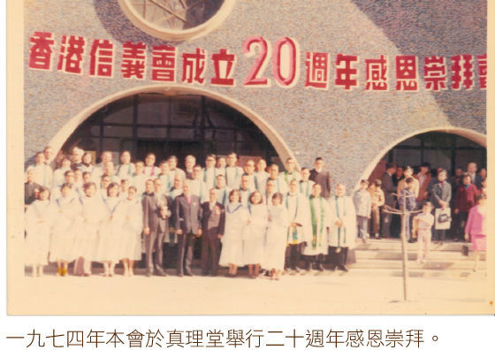
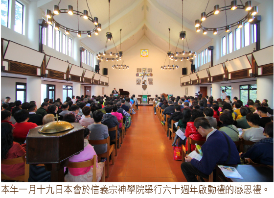

1927 Measureless Is Jesus* Mercy _顏路裔
456耶稣恩典宝无穷尽
[華] ●
|
|
456耶稣恩典宝无穷尽 |
|
|
1.耶稣恩典宝无穷尽，救我大罪人，
他舍命，免我死亡，慈爱真无论；
基督宝血除罪污，万人所仰赖，
能从魔鬼权势内，将我夺回来。
2.我愿一生竭力追寻耶稣至宝恩，
常自勉，对神对人良心无亏损；
我们既为主圣殿，主灵居其中，
便当保守心清洁，因主原为圣。
3.我愿奉献我的一切，报答主恩情，
他爱我，赐下丰恩，甚至舍生命；
我愿听从主命令，广传主福音，
更愿言行见证主，凡事荣耀神。
4.我的肉身时有软弱，求主扶助我，
加添我信心，爱心，使我为主活；
披戴主名在人间，发出馨香气，
活着就是主基督，死后便有益。
|
|
https://www.mred365.cn/szxg/7459.html
|
|
|
|

-
Bedok Lutheran Church 华文部诗班 颂主圣诗 407首 耶稣恩典实无穷经尽

第 2582 期（2014
年 2 月 16 日） ◎ 香港教會巡禮 ◎ 陳堅麗監督
分享：  Whatsapp ::
Whatsapp ::  電郵 ::
電郵 ::  臉書 :: 推特
臉書 :: 推特


回望六十多年之前，本會先賢三、四十人遠從河南、湖北和湖南而來，當時各人身無長物，也無法得知前景，然而在他們以為避難之際，上帝卻使用他們成為香港信義會的奠基石，全憑他們持守使命，在香港隨行隨傳，以成就今日光景，這全都是上帝的旨意。
在這三、四十人之中，背負着一間教會、一間神學院、一間出版社。「中華信義會」是歐美各國信義宗差會在中國的聯合教會，在中華大地向中國人傳福音。「信義神學院」訓練華人教牧，以信義宗信仰內容持承道統。「信義書報部」則出版通訊、詩歌、學道材料，以維繫教會的團結。以上的一教會、一神學院、一出版社，就是香港信義會的祖業，在那時，我們看似一無所有，但上帝為我們預備的卻是樣樣都有。
風捲殘雲，白馬過隙，一九四八年十二月，先賢們抵港，「信義神學院」在港復課，不斷栽培畢業的神學生，大部分同學日後成為本會的教牧同工。一九五四年本會成立，眾志成城地發展福音聖工，再加上當時的「信義宗聯合出版部」出版神學用書、聖詩和學道材料，使到本會在各方面的聖工都漸上軌道。在六十年代，加上挪威及芬蘭差會開辦的堂會、學校和社會服務單位，使到我們在六十年代能在各方面迅速發旺。於此時代，本會在神學教育方面有蕭克諧博士和胡聯輝博士等；在治會方面，則有吳明節牧師、賈永振牧師和姜中原牧師等；而出版方面，則有顏路裔牧師和殷穎牧師等，都是我們耳熟能詳的人物。
本會在七十至八十年代是發展的突破期，人才鼎盛，神學院擴闊國際視野，書籍的出版和創新，教會在拓展福音上，開辦了多所學校和社會服務單位，本會的海外宣教工作於八十年代亦有新的發展，在泰國設立第一個工場，其後在斐濟和柬埔寨也相繼開始工作。另外，西差會亦將堂會、學校和服務單位逐步合併入本會之內，本會的組織架構在這時段逐步發展成今日的規模。
九十年代以來，本會主要面對的不再是教會內部的發展，而是整個香港前途的形勢。香港成為中、英兩國的角力場，加上港英政府多年來塑造香港為自由貿易之都，資金的自由進出，造就九十年代的香港在股票、樓價的高漲，由八十年代的經濟起飛，到九七之前的二十多年，可說是香港最昌盛的日子。在這時段，本會最重要的政策是守望香港，在九七前不作任何遷離，反而強調植根香港，更制定《九十年代宣教策略》，以振揚於香港傳福音的士氣。上帝在此時段給與本會很大的激勵，祂引導本會認定在此時段是為了服侍新一世代的中國，新一世代的香港。這番說話不時在本會和信義宗神學院內響起，使我們知道服侍這個世代，服侍這個香港。
讓我們重新回想一下，我們是甚麼人？我們從哪�堥荂H將要往哪�堨h？人的一生，匆匆只是七、八十個寒暑，但我們卻是上帝揀選在香港的子民，從一起初，上帝就愛中國人，就讓我們的先賢在湖北灄口成立中華信義會，以傳播福音給中國人，隨後南遷香港。今天，香港信義會亦一如上帝愛中國人一樣，我們在這�堙A就是要服侍這世代的香港居民，這是我們從歷史中找到的身分和使命。
香港自九七回歸之後，經歷了金融風暴，但很快又復原過來。也有H5N1、SARS、H7N9
等難關，但也安然渡過。醞釀十多年的政制模式和選舉安排亦引發到很多撕裂，另外，貧富懸殊、新移民人口、自由行、水貨的問題等，都是香港要面對的問題。適值要面對這些問題之時，本會慶祝六十週年（1954-2014），在這時刻，我們正正要重新確定：上帝讓我們充滿愛，去愛我們身邊的每一個人。十九世紀中期，上帝差遣一班充滿愛的宣教士來到中國；二十世紀初，他們成立中華信義會；二十世紀中期，上帝帶領一班充滿愛的流徙之民來到香港，成立香港信義會，今天，我們就是這些人的接班人，見賢思齊，薪火相傳，今天我們不問報償，不問困難，只望承先啟後，愛這個地方的每一位上帝的兒女。
http://www.christianweekly.net/2014/ta2021921.htm